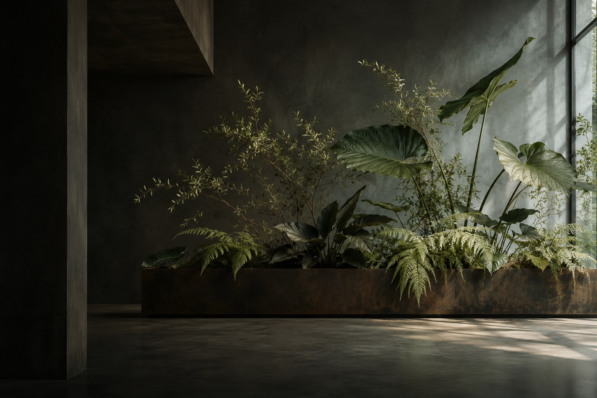
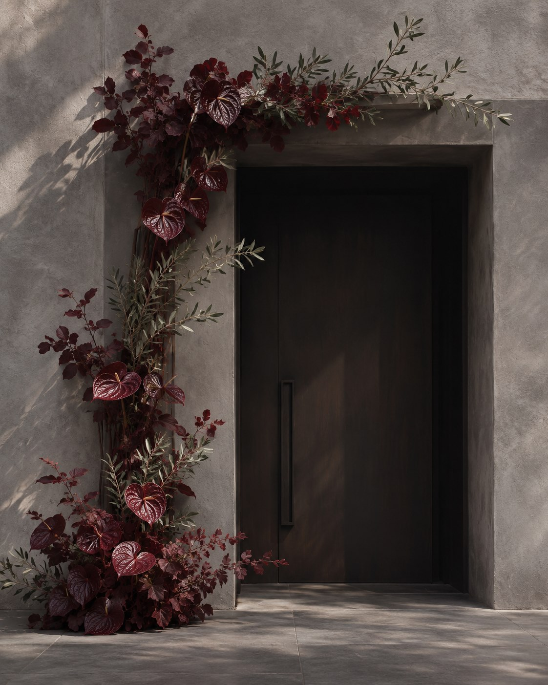
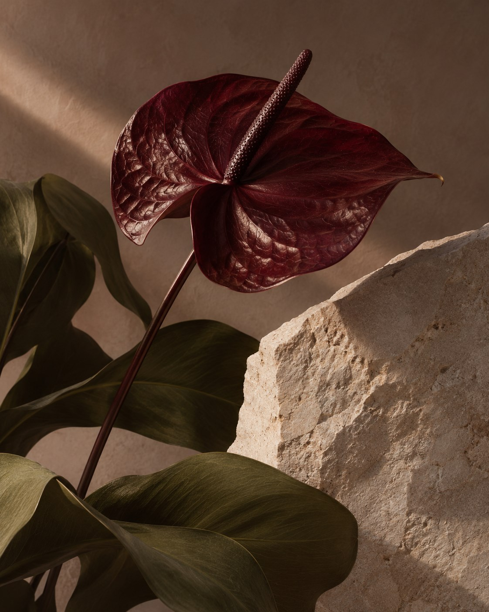

Ателье искусственного озеленения
Зелень как часть архитектуры.
Растительные композиции для коммерческих интерьеров и входных зон.
О нас
Давайте
познакомимся.
Мы ателье искусственного озеленения. Любим начинать с разговора о месте. Что хочется выделить? Где не хватает уюта? Какое первое впечатление должен создавать вход? Иногда пары фотографий и короткого рассказа хватает, чтобы наметить идею.
Посмотреть, что мы уже сделали